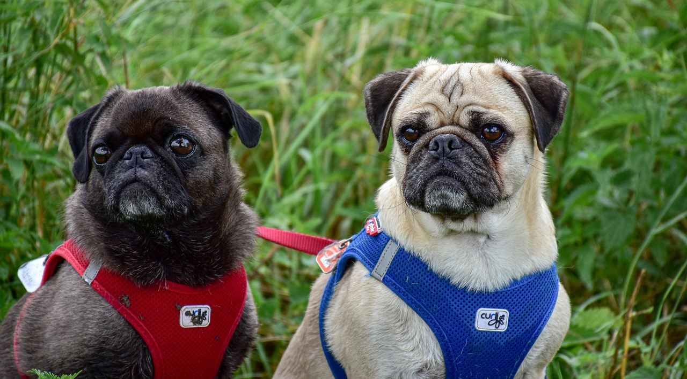
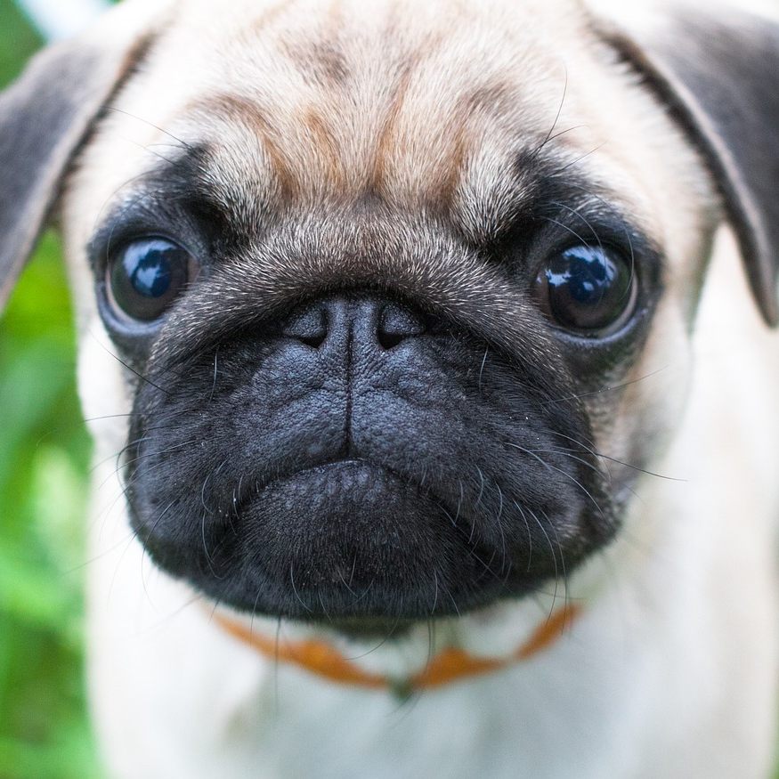
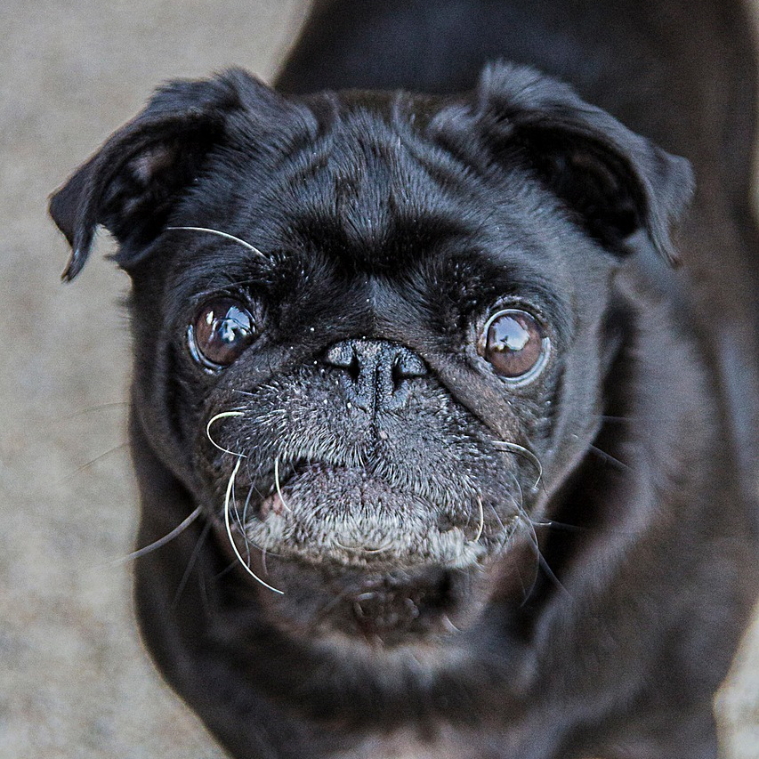
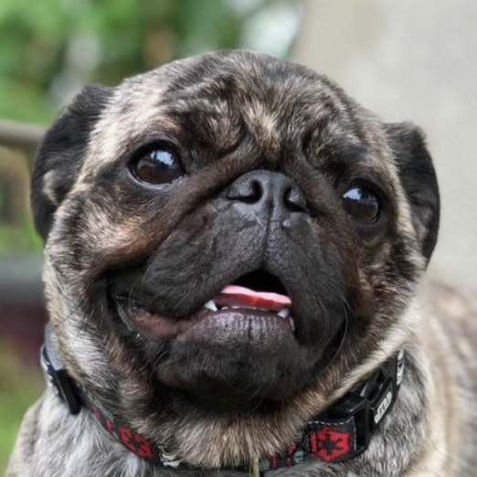
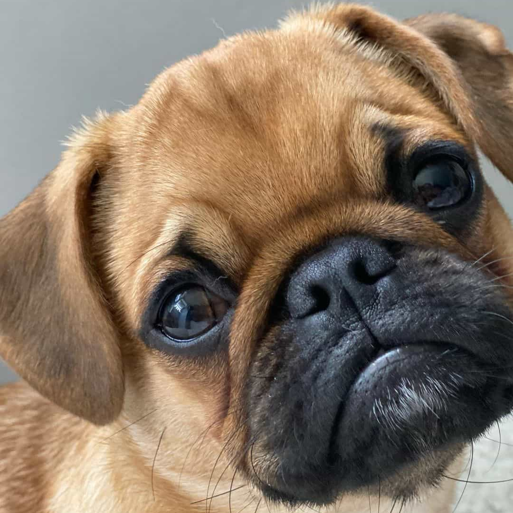

A website for pug lovers!
A community of pug fans that want to share their love of pugs.

Different Types of Pugs

A fawn pug. One of the most common colours of pugs.

Black pugs are often a sought after colour of pug as they are not as common as fawns.

Brindle pugs are rare and do not have a solid coat. The AKC does not recognize this colour.

Apricot pugs are darker than fawns and have an apricot hue to them, hence the name.
Pugs are beautiful, godly creatures that bring a lot of happiness into people's lives.
- Anna Kendrick
Join for pug related content!
If you want more pug related content, click that button right over there.